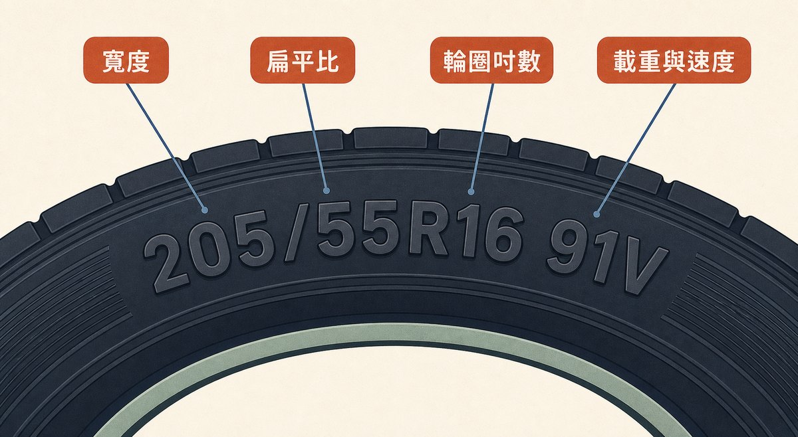
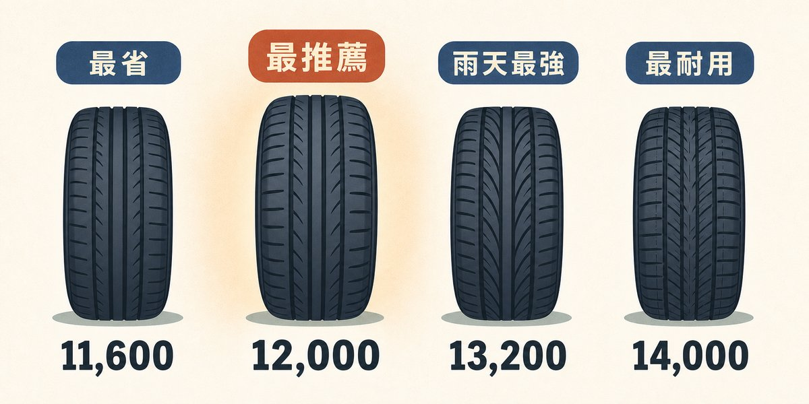
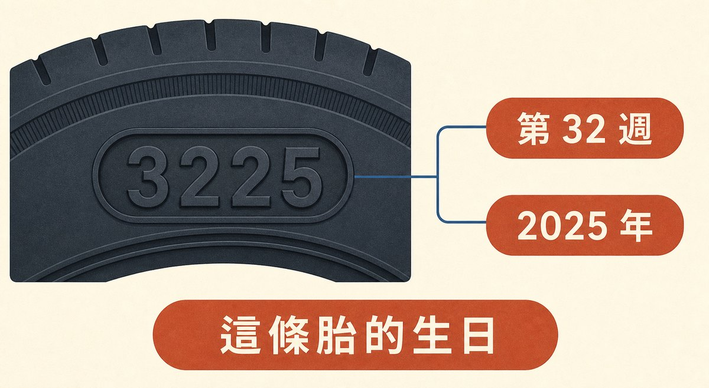
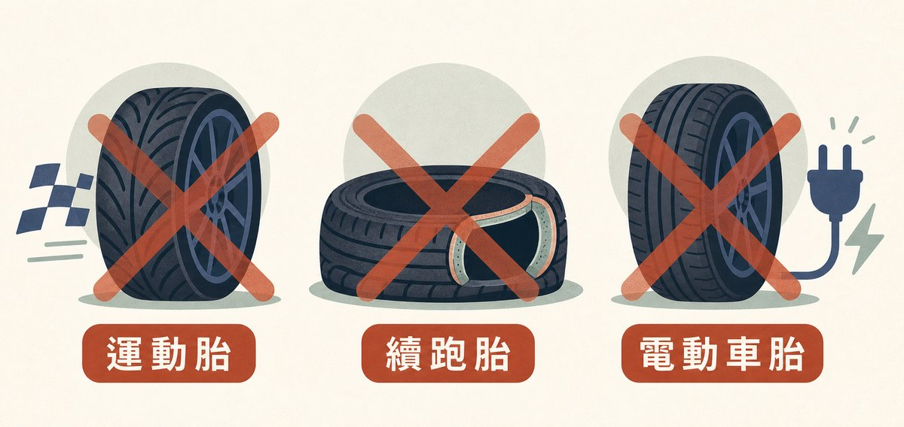
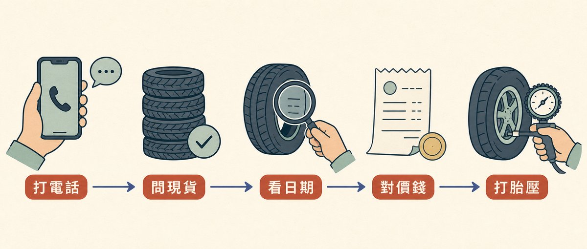
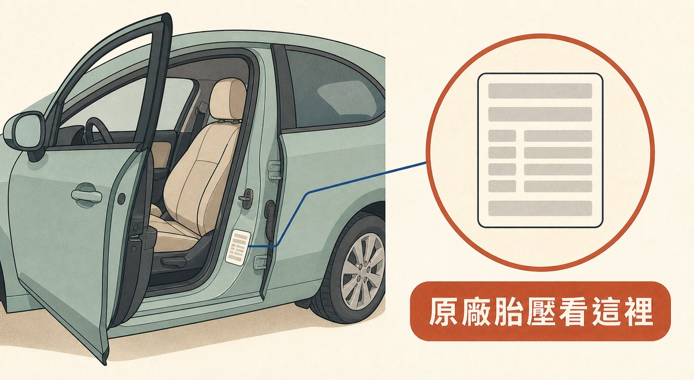
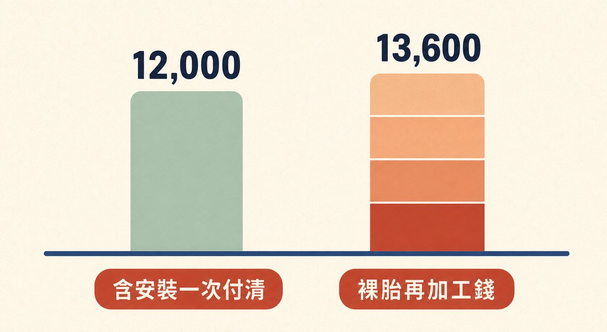
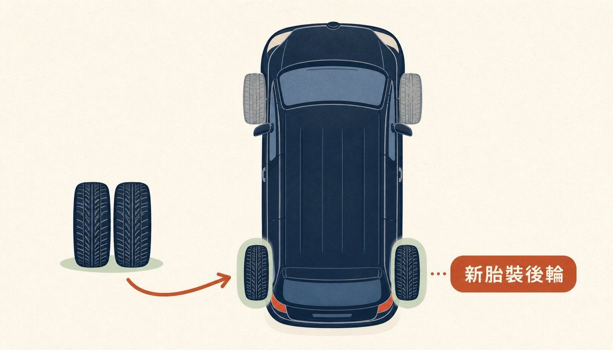
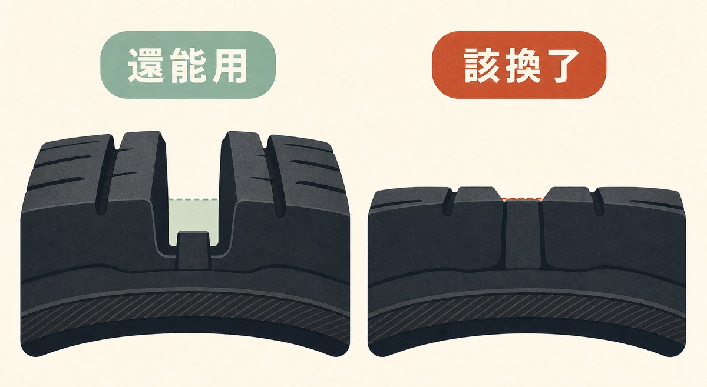

00先花 10 秒：確認你的尺寸
這是最容易搞錯、也最貴的一步——買錯尺寸整組都不能用。
Toyota Wish 依車型有三種原廠輪胎尺寸：195/65R15（15 吋鋁圈，多數標準車型）、205/55R16（16 吋）、215/50R17（Z 版）。所以「我開 Wish」不足以決定要買哪一種。
- 走到車旁邊，看輪胎側面那一串白字，例如 205/55R16 91V
- 或打開駕駛座車門，看門邊柱子上的貼紙（同時也寫著建議胎壓）
- 四條的尺寸要一樣；如果不一樣，先問輪胎行為什麼

看到的是 205/55R16 → 這份報告全部適用，繼續往下看。
看到的是 195/65R15 → 跳到最後一節「如果你是 15 吋」，那裡有同樣查法整理的三個選擇。
看到 215/50R17 或其他 → 告訴我，我再查一份給你。
01四個選擇
下面的價格都是四條的總價，而且已經含安裝、平衡、氮氣、新氣嘴——不是「一條的價錢」，也不用另外付工錢。換四條還附送 3D 定位健診（基本調整，不等於完整四輪定位）。標示是現金價，要刷卡或分期記得先問會不會加價。

Hankook 韓泰 Ventus Prime4
- 同一款胎，加強版和普通版都賣 3,000，等於白拿更耐重的規格
- 國際評測 8.8／10，主打安靜、舒適
- 大雨積水路段的表現只算中上，不是最強
Falken 飛隼 ZE310
- 便宜又不亂做的代表，評測 8.6／10
- 雨天排水評價特別好
- 比較耗油一點點，胎壁偏軟
Continental 馬牌 PremiumContact 7
- 國際評測 9.9／10，濕地抓地力 93 分，全場最高
- 店家自己標明是「24 年胎特價出清」——也就是 2024 年生產的庫存。到店一定要看胎壁的生產週數，能接受再買
- 胎噪比別款大，而且是 91 標準版不是加強版
Michelin 米其林 PRIMACY 5
- 國際車主平均可跑約 5.3 萬公里，比別款多三分之一
- 舒適度 92 分，四款裡最安靜柔軟，評測 9.1／10
- 米其林官方在這個尺寸有 91W（標準）和 94V XL（加強）兩種版本，店家標的「91W XL」兜不起來。不要把它當承載升級，到店請店員確認胎壁實際標示
如果懶得比較：Hankook Ventus Prime4 加強版，12,000 元。它在「安靜、耐用、價錢、承載」四項都沒有短板，也沒有庫存年份或規格存疑的問題，是最不容易後悔的選擇。想再省 400 元選 Falken；能接受 2024 年的庫存胎、又常在雨天開，馬牌是這份清單裡雨天最強的。
02你的車其實需要什麼樣的胎
同樣一個尺寸，賣場裡有 77 種選擇，但適合 Wish 的其實只有一小部分。
Wish 是七人座、車身比一般轎車高、車重依車型約 1,415～1,550 公斤。載滿人和行李的時候，重量壓在四條胎上，而且車身高、轉彎時晃得比轎車明顯。所以挑胎的第一順位不是「跑得快」，而是撐得住和停得住。

① 承載要夠，能選加強版就選。輪胎上的數字 91 代表一條胎可以撐 615 公斤，四條 2,460 公斤。你的車連人帶行李估計不超過 2 噸，91 是夠的——但選 94（加強版，一條 670 公斤）多一層餘裕，滿載跑高速更穩，而且很多款根本不用加錢。
② 速度等級不要往下降。16 吋原廠標的是 V（可承受時速 240 公里）。台灣當然開不到，但保養廠、驗車、二手轉手時都以原廠規格為準，降級只會替自己找麻煩，省那一兩百不值得。清單裡有 7 款是 H（210 公里），我全部排除了。
③ 用途要對。賽道胎、跑車胎裝在 Wish 上，換來的是更吵、更耗油、更快磨完，而它擅長的高速過彎你根本用不到。
- Wish 原廠有 195/65R15、205/55R16、215/50R17 三種配置，車重 1,415 公斤（2.0 經典）～約 1,550 公斤 — 自由電子報車款規格、8891 規格表
- 91 = 615 公斤／條、94 = 670 公斤／條 — 輪胎荷重指數國際對照表
- 77 款候選、價格、荷重速度標示、店家備註 — 小李輪胎官網 2026-08-02 全量抓取；其中速度等級 H 者 7 款
03只要記三件事
胎壁上寫的「205/55R16 91V」不是型號，是尺寸和能力。你只需要盯住三個地方。
- 尺寸一模一樣：205/55R16
- 前面的數字 ≥ 91（91 或 94，94 更好）
- 後面的英文字母是 V 或 W，不要 H、不要 T
想知道每個數字代表什麼？
還有一個一定要問的：輪胎的「生日」。胎壁上有一組四位數字（例如 3225），前兩位是第幾週、後兩位是年份，3225 就是 2025 年第 32 週生產。橡膠會隨時間變硬，就算沒開也會老。買到放兩年的庫存胎，等於少用兩年。到店直接問：「這批胎是哪一年的？」——問得出口，店家就不會拿老庫存給你。


04四款的細節與取捨
① Hankook 韓泰 Ventus Prime4（94V XL）— $12,000
適合：想一次買對、不想再研究的人。安靜、舒適、耐磨（國際車主平均約 4 萬公里），評測 8.8／10，價格落在中間。
最關鍵的是一個容易錯過的細節：小李把同一款胎的三種規格都標 3,000 元——普通版 91V、91W 和加強版 94V XL 同價。買的時候直接指名「94V XL 那個」，等於免費升級成能載更重的版本。
缺點誠實說：國外測試指出它在大雨積水時的排水表現只是中上，而且胎快磨平時抓地力掉得比較明顯。日常雨天完全夠用，但如果你常在颱風天或山路長途，馬牌那條更穩。
② Falken 飛隼 ZE310（94W XL）— $11,600
適合：這次想控制預算，但不想買到爛胎。四條比韓泰便宜 400 元，評測 8.6／10，雨天排水評價反而比韓泰好，車主實際回報可以跑到 4 萬公里。
缺點是滾動阻力較高（油耗差一點點）、胎壁偏軟（方向盤路感比較模糊）。對家庭用車來說都不是大問題。
③ Continental 馬牌 PremiumContact 7（91V）— $13,200
適合：常在雨天開、對煞車距離最在意，而且可以接受庫存胎的人。這條在國際評測拿到 9.9／10，濕地抓地 93 分是這份清單的最高分，35 場專業測試平均第二名。
但它是出清品。店家自己在商品頁寫「24 年胎特價出清，請先詢問庫存」，原價 3,700 降到 3,300。也就是說你買到的很可能是 2024 年生產、放了一年半以上的胎。輪胎的橡膠從出廠就開始老化，這跟前面「要問胎的生日」是同一件事——所以這條的規則是：先問 DOT 週數，2025 年以後才考慮；如果是 2024 年上半年的，要嘛談折扣，要嘛換別條。
④ Michelin 米其林 PRIMACY 5 — $14,000
適合：一年跑一萬公里以上、車還要再開很久的人。買的當下最貴，但國際車主平均能跑約 5.3 萬公里（別款大多 4 萬），舒適度 92 分，是四款中最安靜柔軟的。
兩個提醒。第一，規格標示要當場確認：米其林官方在 205/55R16 這個尺寸有 91W（標準）和 94V XL（加強）兩種，小李標的「91W XL」兩者兜不起來，請店員拿實胎看胎壁，不要當成承載升級來買。第二，它的長壽優勢要跑得夠多才拿得到——一年只跑五、六千公里的話，胎會在磨完之前先老化，那就沒必要多花這 2,000 元。
| 款式 | 四條總價 | 評分 | 濕地 | 預估壽命 | 每公里 |
|---|---|---|---|---|---|
| Michelin PRIMACY 5 | 14,000 | 9.1 | 87 | 53,000 km | 0.26 元 |
| Falken ZE310 | 11,600 | 8.6 | 83 | 39,800 km | 0.29 元 |
| Hankook Ventus Prime4 | 12,000 | 8.8 | 83 | 40,500 km | 0.30 元 |
| Continental PC7 | 13,200 | 9.9 | 93 | 40,900 km | 0.32 元 |
| Bridgestone TURANZA 6 | 14,000 | 8.7 | 86 | 38,500 km | 0.36 元 |
「每公里」這欄要小心解讀。它是「四條總價 ÷ 國外車主平均壽命」，只有在你真的把胎跑到磨平的前提下才成立。台灣高溫潮濕、停戶外、胎壓沒顧好都會讓壽命縮水；一年跑不到 8,000 公里的人，胎會先老化報廢，這時候「便宜的先買」反而划算。評分與壽命來自國際輪胎評測網站 tyrereviews.com（專業測試＋車主回報），是跨尺寸的平均值，不是這個尺寸的實測。
05完整價目表
從 77 款裡挑出 15 款值得考慮的（已排除速度等級低於原廠、以及用途不對的款式）。價格皆為單條含安裝，備註是店家自己標的。
| 品牌／型號 | 規格 | 產地 | 單條 | 四條 | 店家備註 |
|---|---|---|---|---|---|
| Maxxis 瑪吉斯 HP6 | 94W XL | 中國 | 2,700 | 10,800 | |
| NANKANG 南港 AS-3 | 91V | 台灣 | 2,700 | 10,800 | |
| NANKANG 南港 AS-2+ | 94V | 台灣 | 2,700 | 10,800 | |
| Falken 飛隼 ZE310 | 94W XL | 泰國 | 2,900 | 11,600 | |
| Hankook 韓泰 Ventus Prime4 | 94V XL | 韓國 | 3,000 | 12,000 | |
| KUMHO 錦湖 KH27 | 94V XL | 東南亞 | 3,000 | 12,000 | 耐磨指數 420（偏耐磨） |
| Goodyear 固特異 MaxGuard | 91V | 中國 | 3,000 | 12,000 | |
| Toyo 東洋 PXCM | 94V XL | 日本 | 3,100 | 12,400 | 查不到國際評測資料 |
| Bridgestone 普利司通 EP300 | 91V | 泰國 | 3,100 | 12,400 | |
| Continental 馬牌 PC7 | 91V | 歐洲 | 3,300 | 13,200 | 24 年胎特價出清，先問庫存 |
| Toyo 東洋 CR1 | 94V XL | 馬來西亞 | 3,300 | 13,200 | |
| Bridgestone 普利司通 T005A | 91V | 台灣 | 3,400 | 13,600 | |
| Michelin 米其林 PRIMACY 5 | 標 91W XL | — | 3,500 | 14,000 | 規格標示需到店確認 |
| Bridgestone 普利司通 TURANZA 6 | 94W XL | 台灣 | 3,500 | 14,000 | |
| Yokohama 橫濱 AE51 | 94V | 日本 | 3,700 | 14,800 |
整份清單 77 款、單條 1,900～6,100 元、中位數 3,100 元。上表為篩選後結果。
06這三種胎不要買
不是它們不好，是裝在 Wish 上你付了錢卻拿不到對應的好處。

❌ 運動胎／賽道胎
南港 NS-2R（3,900～4,200）、橫濱 AD09（6,100）、米其林 PS4（3,500）都屬於這類。為了高速過彎把胎面做軟做黏，代價是吵、耗油、磨得快。清單裡 NS-2R 的備註直接寫「L120／L180」，那是耐磨指數——數字越低越快磨完，120 大概是一般胎的四分之一壽命。
❌ 失壓續跑胎（RFT／SSR／ZP）
普利司通 T005 RFT（4,000）、馬牌 EC6 SSR（4,300）、倍耐力 P7 r-f（5,100～5,700）。破了還能慢慢開一段路，但胎壁非常硬、坐起來顛、貴 1,000～2,000 元，原廠沒配這種胎的車裝了只有缺點。
❌ 電動車專用胎
米其林 E.PRIMACY（3,500）、固特異 OPTILIFE 3 這類。為了電動車續航把滾動阻力壓到極低，代價通常落在抓地或壽命。汽油車裝了拿不到對應的好處。
還有一類要避開：速度等級 H 的便宜款（清單裡有 7 款，例如南港 SP-9 2,400、瑪吉斯 PR1 2,500）。它們本身沒問題，但 H 級（210 km/h）低於你車上原廠標示的 V 級（240 km/h）。省兩三百塊換來規格不符，之後驗車、保養、轉手都要多解釋一次。
07下雨天為什麼是重點
輪胎的價差，八成花在你希望永遠用不到的那一刻。

乾地上，好胎和普通胎的差距很小，平常開根本感覺不出來。差距全部集中在濕滑路面。國際測試裡，濕地抓地最高（馬牌 PC7，93 分）和中段班（韓泰、Falken，83 分）在時速 80 公里緊急煞車時，停下來的位置會差上幾公尺。
這不是要你一定買最貴的。而是：如果要在某個地方多花錢，花在濕地表現上比花在「跑得快」上實際得多。另外提醒，胎紋磨到剩一半以後，所有胎的排水能力都會明顯下降——所以「該換的時候換」比「買最貴的」更重要。
08到店怎麼說
帶著這份報告去，照著下面講就好。重點是把該問的問完，還有——被推銷時知道怎麼擋。

-
先打電話問現貨
你好，我要換 205／55／16 的輪胎，想問一下 Hankook 韓泰 Ventus Prime4、94V XL 那個規格有沒有現貨？四條含工多少錢？
-
如果店員說沒貨——照這個順序退
那 Falken 的 ZE310、94W XL 有嗎？
如果也沒有，Bridgestone TURANZA 6 或 Toyo CR1 也可以，都要 94 那個規格。備援順序：Hankook Prime4 94V XL → Falken ZE310 94W XL → BS TURANZA 6 94W XL → Toyo CR1 94V XL。不要接受的：速度等級 H 的、失壓續跑胎（RFT／SSR／ZP）、運動胎（NS-2R、AD09、PS4）。
-
到店後確認胎的生產年份
可以幫我看一下這批胎是哪一年的嗎？我想確認不是放很久的庫存。
胎壁四位數字，前兩碼是週、後兩碼是年。一年內都算正常；超過兩年可以要求換一批或談折扣。馬牌 PC7 店家已標明是 2024 年出清品，如果你選它，這一步一定要問。
-
確認報價包含什麼、怎麼付
這個價錢有含安裝、平衡跟新的氣嘴嗎？還有沒有其他要加的？刷卡的話價錢一樣嗎？
網站標的是現金價，刷卡、分期、電子支付有些店家會加 1～3%。
-
換完之後
胎壓幫我打到車上貼紙標示的數值就好，謝謝。
駕駛座門邊柱子上的貼紙寫著原廠建議胎壓（Wish 常見 32～33 psi，以貼紙為準）。換四條附送的是定位「健診」＋基本調整，如果師傅說你的車需要做完整四輪定位（另計約 1,000 元），可以先問「是哪裡不正？有吃胎或跑偏嗎？」再決定。


09錢是怎麼算出來的
同樣一句「一條三千」，在不同店家可能差到兩千八，因為含不含工錢差很多。

| 項目 | 小李輪胎（含裝價） | 網購裸胎＋在地輪胎行 |
|---|---|---|
| 四條輪胎 | 12,000 | 約 10,800（網購常見價） |
| 安裝工資（16 吋 350／條） | 已含 | 1,400 |
| 輪胎平衡（100／顆） | 已含 | 400 |
| 新氣嘴、充氮氣 | 已含 | 視店家 |
| 四輪定位 | 送健診＋基本調整 | 1,000（日系車，完整定位） |
| 實際付出 | 12,000 | 約 13,600 |
所以看到「網路上比較便宜」的時候，記得問清楚那個價錢是不是裸胎。裸胎再加工錢，通常不會比含裝價便宜。
- 「含裝現金價：兩輪 x 2，四輪 x 4（含安裝、氮氣、平衡、全新氣嘴）」「更換四輪附贈 3D 四輪定位健診（基本調整）」— 小李輪胎商品頁原文，2026-08-02 查核，兩個不同商品頁一致
- 安裝 16 吋 350 元／胎、平衡 16 吋以下 100 元／顆、四輪定位日系車 1,000 元 — 台灣輪胎行公開工資價目表
如果你家附近沒有小李輪胎（門市集中在竹北、林口、蘆竹一帶），這份清單一樣有用：把型號和規格抄下來，問在地輪胎行「這款四條含工多少」，用上面的 12,000 當比價基準。報價超過太多就換一家問。
10常見問題
一定要四條一起換嗎？
最理想是四條一起換，抓地力一致，雨天最穩。如果預算有限，至少同一軸（左右兩條）一起換，而且新胎裝後輪——這是安全通則，避免後輪先失去抓地力導致車尾滑出去。

怎麼知道該換了？
三個指標，任一到了就該換：① 胎紋溝槽裡有小凸起（磨耗指示塊），磨到跟胎面一樣平就是到期；② 胎壁出現細裂紋；③ 生產日期超過五、六年，就算胎紋還很厚也建議換掉，橡膠已經硬化。

「XL 加強版」會不會比較硬、比較不舒服？
胎壁確實比較厚，但差異在日常路面上很小，換來的是滿載時更穩。胎壓照原廠貼紙打就好，不需要因為是 XL 就打更高。
貴的胎真的有差嗎？
有，但差在你希望用不到的地方——濕地煞車距離、以及能撐多久。乾地日常開車，1 萬 1 和 1 萬 4 的胎感覺不太出來。如果你一年跑不到 8,000 公里，胎多半會先老化而不是先磨完，那就沒必要買最耐磨的。
為什麼同一款胎，產地不同價錢也不同？
同型號會在不同國家的工廠生產，配方和成本略有差異。清單裡的登祿普 BLUE RESPONSE TG 就有中國、東南亞、日本三個版本，價差 300 元；有趣的是這款中國製反而承載規格高一級又最便宜。所以「日本製一定比較好」不能當通則。
店家說「這款特價出清」，可以買嗎？
可以，但要問清楚為什麼便宜。最常見的原因是庫存年份較舊（像這次的馬牌 PC7 是 2024 年胎）或即將停產。如果折扣夠大、生產日期在一年半內、你又跑得多（會在老化前磨完），出清品其實划算；反過來如果你一年只跑幾千公里，就不要買放很久的胎。
換完需要做四輪定位嗎？
不一定。如果原本開直線不會偏、方向盤不歪、舊胎沒有單邊吃胎，做個免費健診確認就好。真的有異常再花錢做正式定位（日系車約 1,000 元）。
可以直接換不同尺寸嗎？
不建議自己改。尺寸換了會影響時速表準確度、油耗，甚至保險理賠認定。原廠尺寸就是最省事的選擇。
11如果你是 15 吋（195/65R15）
Wish 多數標準車型是這個尺寸。同一天、同一家店查的，一樣是含安裝的四條總價。
| 定位 | 款式 | 規格／產地 | 四條含工 |
|---|---|---|---|
| 最省 | Dunlop 登祿普 BLUE RESPONSE TG | 91V／中國 | 8,800 |
| 最推薦 | Falken 飛隼 ZE310 | 91V／泰國 | 10,000 |
| 最安靜 | Bridgestone 普利司通 TURANZA 6 | 95V XL／印尼 | 11,600 |
| 想買大牌 | Michelin 米其林 PRIMACY 4 | 91V | 12,400 |
15 吋有一個重要差別：原廠速度等級是 H，不是 V。所以前面「不要買 H」那條規則在 15 吋不適用——H 就是這個尺寸的原廠規格，選 H 或 V 都可以。
這個尺寸全站 47 款、單條 1,800～3,800 元、中位數 2,500 元。另外注意：尼克森 SU-1 店家標「售完停產」、馬牌 CC7 與瑪吉斯 HP5 標「數量有限」，這三款去之前要先問。